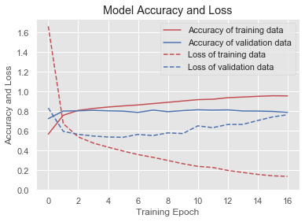

In [151]: for win in windows:
...: window_testing(win)
For window size 50
_________________________________________________________________
Layer (type) Output Shape Param #
=================================================================
reshape_14 (Reshape) (None, 50, 3) 0
_________________________________________________________________
dense_53 (Dense) (None, 50, 100) 400
_________________________________________________________________
dense_54 (Dense) (None, 50, 100) 10100
_________________________________________________________________
dense_55 (Dense) (None, 50, 100) 10100
_________________________________________________________________
flatten_14 (Flatten) (None, 5000) 0
_________________________________________________________________
dense_56 (Dense) (None, 6) 30006
=================================================================
Total params: 50,606
Trainable params: 50,606
Non-trainable params: 0
_________________________________________________________________
None
Train on 28112 samples, validate on 7029 samples
Epoch 1/50
28112/28112 [==============================] - 9s 334us/step - loss: 0.7905 - acc: 0.7272 - val_loss: 0.6184 - val_acc: 0.7813
Epoch 2/50
28112/28112 [==============================] - 7s 249us/step - loss: 0.5625 - acc: 0.8020 - val_loss: 0.5660 - val_acc: 0.8017
Epoch 3/50
28112/28112 [==============================] - 7s 255us/step - loss: 0.5196 - acc: 0.8123 - val_loss: 0.5207 - val_acc: 0.8123
Epoch 4/50
28112/28112 [==============================] - 7s 245us/step - loss: 0.4834 - acc: 0.8204 - val_loss: 0.5160 - val_acc: 0.8112
Epoch 5/50
28112/28112 [==============================] - 7s 260us/step - loss: 0.4585 - acc: 0.8279 - val_loss: 0.5331 - val_acc: 0.8013
Epoch 6/50
28112/28112 [==============================] - 7s 246us/step - loss: 0.4416 - acc: 0.8353 - val_loss: 0.4876 - val_acc: 0.8152
Epoch 7/50
28112/28112 [==============================] - 8s 269us/step - loss: 0.4218 - acc: 0.8407 - val_loss: 0.4845 - val_acc: 0.8192
Epoch 8/50
28112/28112 [==============================] - 7s 253us/step - loss: 0.4134 - acc: 0.8447 - val_loss: 0.4686 - val_acc: 0.8209
Epoch 9/50
28112/28112 [==============================] - 7s 264us/step - loss: 0.4063 - acc: 0.8474 - val_loss: 0.4611 - val_acc: 0.8274
Epoch 10/50
28112/28112 [==============================] - 7s 249us/step - loss: 0.3894 - acc: 0.8542 - val_loss: 0.4620 - val_acc: 0.8264
Epoch 11/50
28112/28112 [==============================] - 7s 254us/step - loss: 0.3850 - acc: 0.8566 - val_loss: 0.4432 - val_acc: 0.8334
Epoch 12/50
28112/28112 [==============================] - 7s 250us/step - loss: 0.3695 - acc: 0.8620 - val_loss: 0.4683 - val_acc: 0.8280
Epoch 13/50
28112/28112 [==============================] - 7s 244us/step - loss: 0.3622 - acc: 0.8651 - val_loss: 0.4457 - val_acc: 0.8300
Epoch 14/50
28112/28112 [==============================] - 7s 264us/step - loss: 0.3536 - acc: 0.8679 - val_loss: 0.4500 - val_acc: 0.8283
Epoch 15/50
28112/28112 [==============================] - 8s 268us/step - loss: 0.3440 - acc: 0.8712 - val_loss: 0.4478 - val_acc: 0.8277
Epoch 16/50
28112/28112 [==============================] - 6s 224us/step - loss: 0.3406 - acc: 0.8716 - val_loss: 0.4542 - val_acc: 0.8306
Epoch 17/50
28112/28112 [==============================] - 6s 200us/step - loss: 0.3401 - acc: 0.8719 - val_loss: 0.4385 - val_acc: 0.8394
Epoch 18/50
28112/28112 [==============================] - 5s 178us/step - loss: 0.3200 - acc: 0.8806 - val_loss: 0.4512 - val_acc: 0.8392
Epoch 19/50
28112/28112 [==============================] - 5s 184us/step - loss: 0.3143 - acc: 0.8830 - val_loss: 0.4397 - val_acc: 0.8402
Epoch 20/50
28112/28112 [==============================] - 5s 174us/step - loss: 0.3155 - acc: 0.8818 - val_loss: 0.4966 - val_acc: 0.8306
precision recall f1-score support
0.0 0.82 0.31 0.45 3217
1.0 0.99 0.93 0.96 10983
2.0 1.00 0.99 0.99 1901
3.0 0.98 1.00 0.99 1550
4.0 0.67 0.58 0.62 3928
5.0 0.79 0.98 0.88 13562
micro avg 0.86 0.86 0.86 35141
macro avg 0.88 0.80 0.82 35141
weighted avg 0.86 0.86 0.85 35141
precision recall f1-score support
0.0 0.69 0.24 0.36 809
1.0 0.97 0.90 0.94 2706
2.0 0.99 1.00 0.99 499
3.0 0.99 0.99 0.99 381
4.0 0.55 0.49 0.52 981
5.0 0.77 0.96 0.86 3410
micro avg 0.83 0.83 0.83 8786
macro avg 0.83 0.76 0.78 8786
weighted avg 0.82 0.83 0.81 8786
Dumping Performance records ..
---------------------------------------------------------
For window size 80
_________________________________________________________________
Layer (type) Output Shape Param #
=================================================================
reshape_15 (Reshape) (None, 80, 3) 0
_________________________________________________________________
dense_57 (Dense) (None, 80, 100) 400
_________________________________________________________________
dense_58 (Dense) (None, 80, 100) 10100
_________________________________________________________________
dense_59 (Dense) (None, 80, 100) 10100
_________________________________________________________________
flatten_15 (Flatten) (None, 8000) 0
_________________________________________________________________
dense_60 (Dense) (None, 6) 48006
=================================================================
Total params: 68,606
Trainable params: 68,606
Non-trainable params: 0
_________________________________________________________________
None
Train on 17570 samples, validate on 4393 samples
Epoch 1/50
17570/17570 [==============================] - 7s 399us/step - loss: 0.9145 - acc: 0.6810 - val_loss: 0.6267 - val_acc: 0.7769
Epoch 2/50
17570/17570 [==============================] - 5s 278us/step - loss: 0.5726 - acc: 0.7963 - val_loss: 0.5496 - val_acc: 0.7963
Epoch 3/50
17570/17570 [==============================] - 5s 276us/step - loss: 0.5026 - acc: 0.8191 - val_loss: 0.5317 - val_acc: 0.8049
Epoch 4/50
17570/17570 [==============================] - 5s 297us/step - loss: 0.4629 - acc: 0.8294 - val_loss: 0.5174 - val_acc: 0.8124
Epoch 5/50
17570/17570 [==============================] - 5s 280us/step - loss: 0.4348 - acc: 0.8399 - val_loss: 0.5094 - val_acc: 0.8170
Epoch 6/50
17570/17570 [==============================] - 5s 287us/step - loss: 0.4031 - acc: 0.8507 - val_loss: 0.5034 - val_acc: 0.8206
Epoch 7/50
17570/17570 [==============================] - 5s 294us/step - loss: 0.3792 - acc: 0.8592 - val_loss: 0.4899 - val_acc: 0.8259
Epoch 8/50
17570/17570 [==============================] - 5s 280us/step - loss: 0.3646 - acc: 0.8638 - val_loss: 0.4886 - val_acc: 0.8218
Epoch 9/50
17570/17570 [==============================] - 5s 280us/step - loss: 0.3490 - acc: 0.8724 - val_loss: 0.5235 - val_acc: 0.8172
Epoch 10/50
17570/17570 [==============================] - 5s 287us/step - loss: 0.3318 - acc: 0.8745 - val_loss: 0.5045 - val_acc: 0.8190
Epoch 11/50
17570/17570 [==============================] - 5s 281us/step - loss: 0.3150 - acc: 0.8827 - val_loss: 0.5171 - val_acc: 0.8070
Epoch 12/50
17570/17570 [==============================] - 5s 281us/step - loss: 0.3032 - acc: 0.8870 - val_loss: 0.5029 - val_acc: 0.8170
Epoch 13/50
17570/17570 [==============================] - 5s 288us/step - loss: 0.2999 - acc: 0.8874 - val_loss: 0.5231 - val_acc: 0.8136
Epoch 14/50
17570/17570 [==============================] - 5s 288us/step - loss: 0.2847 - acc: 0.8931 - val_loss: 0.4956 - val_acc: 0.8234
Epoch 15/50
17570/17570 [==============================] - 5s 279us/step - loss: 0.2711 - acc: 0.8986 - val_loss: 0.5111 - val_acc: 0.8284
Epoch 16/50
17570/17570 [==============================] - 5s 277us/step - loss: 0.2662 - acc: 0.9006 - val_loss: 0.5146 - val_acc: 0.8268
Epoch 17/50
17570/17570 [==============================] - 5s 295us/step - loss: 0.2518 - acc: 0.9085 - val_loss: 0.5370 - val_acc: 0.8193
Epoch 18/50
17570/17570 [==============================] - 5s 277us/step - loss: 0.2411 - acc: 0.9120 - val_loss: 0.5232 - val_acc: 0.8261
Epoch 19/50
17570/17570 [==============================] - 5s 278us/step - loss: 0.2367 - acc: 0.9123 - val_loss: 0.5365 - val_acc: 0.8229
Epoch 20/50
17570/17570 [==============================] - 5s 295us/step - loss: 0.2246 - acc: 0.9188 - val_loss: 0.5500 - val_acc: 0.8193
Epoch 21/50
17570/17570 [==============================] - 5s 279us/step - loss: 0.2242 - acc: 0.9183 - val_loss: 0.5621 - val_acc: 0.8245
precision recall f1-score support
0.0 0.81 0.57 0.67 1981
1.0 0.99 0.97 0.98 6838
2.0 1.00 0.96 0.98 1187
3.0 0.95 0.99 0.97 982
4.0 0.77 0.72 0.74 2458
5.0 0.88 0.96 0.92 8517
micro avg 0.90 0.90 0.90 21963
macro avg 0.90 0.86 0.88 21963
weighted avg 0.90 0.90 0.90 21963
precision recall f1-score support
0.0 0.49 0.31 0.38 534
1.0 0.96 0.91 0.94 1715
2.0 1.00 0.94 0.97 310
3.0 0.91 1.00 0.95 228
4.0 0.51 0.46 0.49 609
5.0 0.79 0.92 0.85 2095
micro avg 0.81 0.81 0.81 5491
macro avg 0.78 0.76 0.76 5491
weighted avg 0.80 0.81 0.80 5491
Dumping Performance records ..
---------------------------------------------------------
For window size 120
_________________________________________________________________
Layer (type) Output Shape Param #
=================================================================
reshape_16 (Reshape) (None, 120, 3) 0
_________________________________________________________________
dense_61 (Dense) (None, 120, 100) 400
_________________________________________________________________
dense_62 (Dense) (None, 120, 100) 10100
_________________________________________________________________
dense_63 (Dense) (None, 120, 100) 10100
_________________________________________________________________
flatten_16 (Flatten) (None, 12000) 0
_________________________________________________________________
dense_64 (Dense) (None, 6) 72006
=================================================================
Total params: 92,606
Trainable params: 92,606
Non-trainable params: 0
_________________________________________________________________
None
Train on 11712 samples, validate on 2929 samples
Epoch 1/50
11712/11712 [==============================] - 7s 563us/step - loss: 1.1635 - acc: 0.6161 - val_loss: 0.6442 - val_acc: 0.7777
Epoch 2/50
11712/11712 [==============================] - 5s 432us/step - loss: 0.5922 - acc: 0.7902 - val_loss: 0.5271 - val_acc: 0.8085
Epoch 3/50
11712/11712 [==============================] - 5s 432us/step - loss: 0.5061 - acc: 0.8221 - val_loss: 0.4949 - val_acc: 0.8208
Epoch 4/50
11712/11712 [==============================] - 5s 419us/step - loss: 0.4550 - acc: 0.8358 - val_loss: 0.4985 - val_acc: 0.8214
Epoch 5/50
11712/11712 [==============================] - 5s 426us/step - loss: 0.4202 - acc: 0.8454 - val_loss: 0.4735 - val_acc: 0.8290
Epoch 6/50
11712/11712 [==============================] - 5s 440us/step - loss: 0.3723 - acc: 0.8628 - val_loss: 0.4864 - val_acc: 0.8276
Epoch 7/50
11712/11712 [==============================] - 5s 416us/step - loss: 0.3504 - acc: 0.8696 - val_loss: 0.4782 - val_acc: 0.8334
Epoch 8/50
11712/11712 [==============================] - 5s 422us/step - loss: 0.3108 - acc: 0.8876 - val_loss: 0.4682 - val_acc: 0.8358
Epoch 9/50
11712/11712 [==============================] - 5s 441us/step - loss: 0.2883 - acc: 0.8946 - val_loss: 0.4762 - val_acc: 0.8348
Epoch 10/50
11712/11712 [==============================] - 5s 417us/step - loss: 0.2707 - acc: 0.8992 - val_loss: 0.5288 - val_acc: 0.8238
Epoch 11/50
11712/11712 [==============================] - 5s 417us/step - loss: 0.2587 - acc: 0.9063 - val_loss: 0.4789 - val_acc: 0.8433
Epoch 12/50
11712/11712 [==============================] - 5s 444us/step - loss: 0.2390 - acc: 0.9140 - val_loss: 0.4968 - val_acc: 0.8368
Epoch 13/50
11712/11712 [==============================] - 5s 423us/step - loss: 0.2253 - acc: 0.9171 - val_loss: 0.5248 - val_acc: 0.8375
Epoch 14/50
11712/11712 [==============================] - 5s 418us/step - loss: 0.2161 - acc: 0.9214 - val_loss: 0.5271 - val_acc: 0.8279
Epoch 15/50
11712/11712 [==============================] - 5s 454us/step - loss: 0.1941 - acc: 0.9319 - val_loss: 0.5196 - val_acc: 0.8392
Epoch 16/50
11712/11712 [==============================] - 5s 421us/step - loss: 0.1750 - acc: 0.9402 - val_loss: 0.5382 - val_acc: 0.8348
Epoch 17/50
11712/11712 [==============================] - 5s 421us/step - loss: 0.1626 - acc: 0.9442 - val_loss: 0.5551 - val_acc: 0.8290
Epoch 18/50
11712/11712 [==============================] - 5s 431us/step - loss: 0.1507 - acc: 0.9489 - val_loss: 0.6048 - val_acc: 0.8327
Epoch 19/50
11712/11712 [==============================] - 5s 422us/step - loss: 0.1424 - acc: 0.9518 - val_loss: 0.5877 - val_acc: 0.8320
Epoch 20/50
11712/11712 [==============================] - 5s 419us/step - loss: 0.1389 - acc: 0.9533 - val_loss: 0.6442 - val_acc: 0.8068
Epoch 21/50
11712/11712 [==============================] - 5s 424us/step - loss: 0.1321 - acc: 0.9554 - val_loss: 0.6399 - val_acc: 0.8279
Epoch 22/50
11712/11712 [==============================] - 5s 432us/step - loss: 0.1120 - acc: 0.9663 - val_loss: 0.6594 - val_acc: 0.8262
Epoch 23/50
11712/11712 [==============================] - 5s 415us/step - loss: 0.1098 - acc: 0.9654 - val_loss: 0.6875 - val_acc: 0.8317
precision recall f1-score support
0.0 0.92 0.67 0.77 1326
1.0 0.99 0.99 0.99 4603
2.0 0.97 0.99 0.98 769
3.0 0.99 0.97 0.98 635
4.0 0.82 0.87 0.85 1641
5.0 0.93 0.98 0.95 5667
micro avg 0.94 0.94 0.94 14641
macro avg 0.94 0.91 0.92 14641
weighted avg 0.94 0.94 0.94 14641
precision recall f1-score support
0.0 0.46 0.25 0.32 349
1.0 0.92 0.93 0.93 1101
2.0 0.97 0.97 0.97 231
3.0 0.98 0.95 0.96 170
4.0 0.46 0.50 0.48 403
5.0 0.80 0.87 0.84 1407
micro avg 0.80 0.80 0.80 3661
macro avg 0.77 0.75 0.75 3661
weighted avg 0.79 0.80 0.79 3661
Dumping Performance records ..
---------------------------------------------------------
For window size 160
_________________________________________________________________
Layer (type) Output Shape Param #
=================================================================
reshape_17 (Reshape) (None, 160, 3) 0
_________________________________________________________________
dense_65 (Dense) (None, 160, 100) 400
_________________________________________________________________
dense_66 (Dense) (None, 160, 100) 10100
_________________________________________________________________
dense_67 (Dense) (None, 160, 100) 10100
_________________________________________________________________
flatten_17 (Flatten) (None, 16000) 0
_________________________________________________________________
dense_68 (Dense) (None, 6) 96006
=================================================================
Total params: 116,606
Trainable params: 116,606
Non-trainable params: 0
_________________________________________________________________
None
Train on 8784 samples, validate on 2196 samples
Epoch 1/50
8784/8784 [==============================] - 7s 774us/step - loss: 1.6623 - acc: 0.5663 - val_loss: 0.8321 - val_acc: 0.7240
Epoch 2/50
8784/8784 [==============================] - 5s 585us/step - loss: 0.6738 - acc: 0.7584 - val_loss: 0.5954 - val_acc: 0.8015
Epoch 3/50
8784/8784 [==============================] - 5s 569us/step - loss: 0.5391 - acc: 0.8082 - val_loss: 0.5647 - val_acc: 0.8037
Epoch 4/50
8784/8784 [==============================] - 5s 566us/step - loss: 0.4770 - acc: 0.8275 - val_loss: 0.5477 - val_acc: 0.8083
Epoch 5/50
8784/8784 [==============================] - 5s 584us/step - loss: 0.4344 - acc: 0.8423 - val_loss: 0.5378 - val_acc: 0.8037
Epoch 6/50
8784/8784 [==============================] - 5s 578us/step - loss: 0.3952 - acc: 0.8536 - val_loss: 0.5350 - val_acc: 0.8005
Epoch 7/50
8784/8784 [==============================] - 5s 564us/step - loss: 0.3596 - acc: 0.8634 - val_loss: 0.5641 - val_acc: 0.7878
Epoch 8/50
8784/8784 [==============================] - 5s 564us/step - loss: 0.3313 - acc: 0.8772 - val_loss: 0.5523 - val_acc: 0.8110
Epoch 9/50
8784/8784 [==============================] - 5s 584us/step - loss: 0.2994 - acc: 0.8901 - val_loss: 0.5797 - val_acc: 0.7951
Epoch 10/50
8784/8784 [==============================] - 5s 557us/step - loss: 0.2666 - acc: 0.9037 - val_loss: 0.5731 - val_acc: 0.8060
Epoch 11/50
8784/8784 [==============================] - 5s 557us/step - loss: 0.2400 - acc: 0.9173 - val_loss: 0.6510 - val_acc: 0.8142
Epoch 12/50
8784/8784 [==============================] - 5s 585us/step - loss: 0.2282 - acc: 0.9213 - val_loss: 0.6330 - val_acc: 0.8106
Epoch 13/50
8784/8784 [==============================] - 5s 558us/step - loss: 0.1986 - acc: 0.9369 - val_loss: 0.6650 - val_acc: 0.8133
Epoch 14/50
8784/8784 [==============================] - 5s 559us/step - loss: 0.1781 - acc: 0.9438 - val_loss: 0.6658 - val_acc: 0.8019
Epoch 15/50
8784/8784 [==============================] - 5s 585us/step - loss: 0.1582 - acc: 0.9510 - val_loss: 0.7047 - val_acc: 0.8015
Epoch 16/50
8784/8784 [==============================] - 5s 560us/step - loss: 0.1434 - acc: 0.9567 - val_loss: 0.7418 - val_acc: 0.7978
Epoch 17/50
8784/8784 [==============================] - 5s 560us/step - loss: 0.1383 - acc: 0.9555 - val_loss: 0.7642 - val_acc: 0.7883

precision recall f1-score support
0.0 0.85 0.75 0.80 981
1.0 0.99 0.98 0.99 3428
2.0 0.98 0.96 0.97 591
3.0 0.95 0.98 0.96 481
4.0 0.77 0.89 0.82 1230
5.0 0.95 0.94 0.95 4269
micro avg 0.93 0.93 0.93 10980
macro avg 0.91 0.92 0.91 10980
weighted avg 0.94 0.93 0.93 10980
precision recall f1-score support
0.0 0.41 0.29 0.34 274
1.0 0.94 0.93 0.93 845
2.0 0.97 0.95 0.96 155
3.0 0.98 0.97 0.97 125
4.0 0.44 0.50 0.47 307
5.0 0.80 0.84 0.82 1040
micro avg 0.79 0.79 0.79 2746
macro avg 0.76 0.75 0.75 2746
weighted avg 0.78 0.79 0.78 2746
Dumping Performance records ..
---------------------------------------------------------
For window size 200
_________________________________________________________________
Layer (type) Output Shape Param #
=================================================================
reshape_18 (Reshape) (None, 200, 3) 0
_________________________________________________________________
dense_69 (Dense) (None, 200, 100) 400
_________________________________________________________________
dense_70 (Dense) (None, 200, 100) 10100
_________________________________________________________________
dense_71 (Dense) (None, 200, 100) 10100
_________________________________________________________________
flatten_18 (Flatten) (None, 20000) 0
_________________________________________________________________
dense_72 (Dense) (None, 6) 120006
=================================================================
Total params: 140,606
Trainable params: 140,606
Non-trainable params: 0
_________________________________________________________________
None
Train on 7027 samples, validate on 1757 samples
Epoch 1/50
7027/7027 [==============================] - 7s 975us/step - loss: 1.6155 - acc: 0.5273 - val_loss: 0.8046 - val_acc: 0.7416
Epoch 2/50
7027/7027 [==============================] - 5s 736us/step - loss: 0.6849 - acc: 0.7511 - val_loss: 0.6147 - val_acc: 0.7758
Epoch 3/50
7027/7027 [==============================] - 5s 707us/step - loss: 0.5386 - acc: 0.8050 - val_loss: 0.5644 - val_acc: 0.8031
Epoch 4/50
7027/7027 [==============================] - 5s 706us/step - loss: 0.4608 - acc: 0.8315 - val_loss: 0.5557 - val_acc: 0.7945
Epoch 5/50
7027/7027 [==============================] - 6s 800us/step - loss: 0.3991 - acc: 0.8561 - val_loss: 0.5469 - val_acc: 0.8008
Epoch 6/50
7027/7027 [==============================] - 5s 728us/step - loss: 0.3458 - acc: 0.8778 - val_loss: 0.5308 - val_acc: 0.8116
Epoch 7/50
7027/7027 [==============================] - 5s 709us/step - loss: 0.2962 - acc: 0.8944 - val_loss: 0.5455 - val_acc: 0.8054
Epoch 8/50
7027/7027 [==============================] - 5s 725us/step - loss: 0.2586 - acc: 0.9088 - val_loss: 0.5691 - val_acc: 0.8048
Epoch 9/50
7027/7027 [==============================] - 5s 703us/step - loss: 0.2158 - acc: 0.9311 - val_loss: 0.5898 - val_acc: 0.7900
Epoch 10/50
7027/7027 [==============================] - 5s 701us/step - loss: 0.1983 - acc: 0.9323 - val_loss: 0.6155 - val_acc: 0.7894
Epoch 11/50
7027/7027 [==============================] - 5s 720us/step - loss: 0.1631 - acc: 0.9519 - val_loss: 0.6493 - val_acc: 0.7968
Epoch 12/50
7027/7027 [==============================] - 5s 707us/step - loss: 0.1406 - acc: 0.9583 - val_loss: 0.6850 - val_acc: 0.7968
Epoch 13/50
7027/7027 [==============================] - 5s 707us/step - loss: 0.1273 - acc: 0.9633 - val_loss: 0.7131 - val_acc: 0.7951
Epoch 14/50
7027/7027 [==============================] - 5s 756us/step - loss: 0.1010 - acc: 0.9755 - val_loss: 0.7585 - val_acc: 0.7923
Epoch 15/50
7027/7027 [==============================] - 5s 743us/step - loss: 0.0845 - acc: 0.9808 - val_loss: 0.8112 - val_acc: 0.7894
Epoch 16/50
7027/7027 [==============================] - 5s 714us/step - loss: 0.0748 - acc: 0.9831 - val_loss: 0.8425 - val_acc: 0.7849
Epoch 17/50
7027/7027 [==============================] - 5s 725us/step - loss: 0.0570 - acc: 0.9902 - val_loss: 0.8959 - val_acc: 0.7900
Epoch 18/50
7027/7027 [==============================] - 5s 726us/step - loss: 0.0459 - acc: 0.9929 - val_loss: 0.9395 - val_acc: 0.7911
Epoch 19/50
7027/7027 [==============================] - 5s 718us/step - loss: 0.0390 - acc: 0.9953 - val_loss: 1.0037 - val_acc: 0.7940
Epoch 20/50
7027/7027 [==============================] - 5s 734us/step - loss: 0.0332 - acc: 0.9972 - val_loss: 1.0268 - val_acc: 0.7877
Epoch 21/50
7027/7027 [==============================] - 5s 732us/step - loss: 0.0302 - acc: 0.9967 - val_loss: 1.0718 - val_acc: 0.7780
precision recall f1-score support
0.0 0.88 0.87 0.87 810
1.0 0.99 0.98 0.99 2737
2.0 1.00 0.98 0.99 476
3.0 0.98 0.99 0.99 396
4.0 0.88 0.89 0.88 991
5.0 0.96 0.96 0.96 3374
micro avg 0.95 0.95 0.95 8784
macro avg 0.95 0.95 0.95 8784
weighted avg 0.95 0.95 0.95 8784
precision recall f1-score support
0.0 0.40 0.35 0.37 197
1.0 0.92 0.93 0.93 682
2.0 0.98 0.94 0.96 127
3.0 0.93 0.92 0.92 86
4.0 0.39 0.45 0.42 236
5.0 0.81 0.80 0.80 869
micro avg 0.78 0.78 0.78 2197
macro avg 0.74 0.73 0.73 2197
weighted avg 0.78 0.78 0.78 2197
Dumping Performance records ..
---------------------------------------------------------
In [152]: